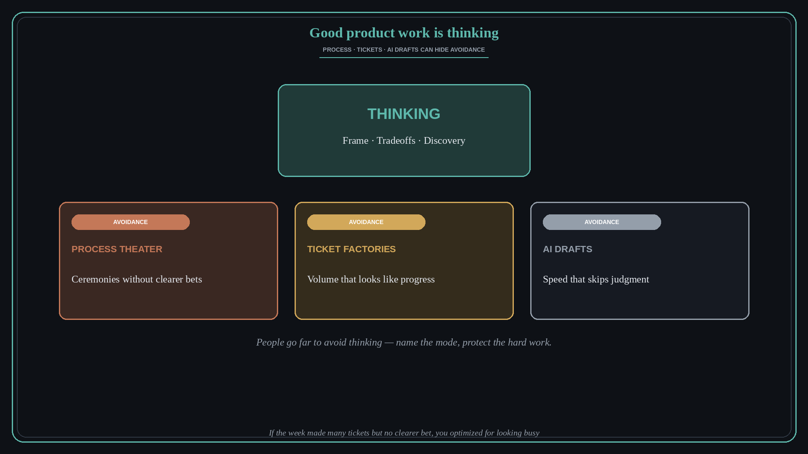

Good product work is thinking (avoiding thinking)
Source: Marty Cagan via Lenny Rachitsky (@lennysan)
original post
What it claims
Marty Cagan: “Fundamentally good product work is about thinking. I did not appreciate the lengths that people would go to in order to avoid thinking.” Process theater, ticket factories, and AI that drafts for you can all be sophisticated ways to skip the hard part — problem framing, tradeoffs, and discovery.
Why it matters for a PO
PO calendars fill with ceremonies and status. That looks like product work and can hide the absence of real thinking. Agents that produce PRDs and roadmaps make avoidance cheaper. Protect time for the uncomfortable thinking that process cannot replace.
3 takeaways
- Name avoidance modes: process theater, ticket factories, and AI drafts without judgment.
- Real PO work is problem framing, tradeoffs, and discovery thinking — not artifact volume.
- If the week produced many tickets but no clearer bet, you optimized for looking busy.
Practice this week
Block one 90-minute slot this week with no tickets and no AI draft. Write the problem, the tradeoff, and the decision you are avoiding. Stop when the bet is clear enough to challenge with the team.